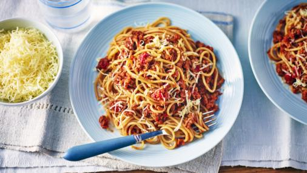

Spaghetti Bolognese

Preparation time
less than 30 minutes
Skills
Medium
Serves
Serves 4-6
Made by User Name
Ingredients
2 tbsp olive oil
2 medium onions, sliced
1 yellow pepper, deseeded, cut into chunks
1 medium sweet potato (approximately 300g/10½oz), peeled, cut into chunks
1 tsp ground coriander
1 tbsp plain flour
400g tin chopped tomatoes
2 tbsp chipotle paste (available at larger supermarkets and delicatessens)
400g tin cannellini beans, rinsed and drained
400g tin red kidney beans, rinsed and drained
salt and freshly ground black pepper
soured cream, to serve (optional)
Method
- Put all of the dressing ingredients in a jam jar, replace the lid and shake until well combined. Season with salt and pepper. Add more chilli if desired.
- Put all of the dressing ingredients in a jam jar, replace the lid and shake until well combined. Season with salt and pepper. Add more chilli if desired.
- Put all of the dressing ingredients in a jam jar, replace the lid and shake until well combined. Season with salt and pepper. Add more chilli if desired.
- Put all of the dressing ingredients in a jam jar, replace the lid and shake until well combined. Season with salt and pepper. Add more chilli if desired.
- Put all of the dressing ingredients in a jam jar, replace the lid and shake until well combined. Season with salt and pepper. Add more chilli if desired.
- Put all of the dressing ingredients in a jam jar, replace the lid and shake until well combined. Season with salt and pepper. Add more chilli if desired.
- Put all of the dressing ingredients in a jam jar, replace the lid and shake until well combined. Season with salt and pepper. Add more chilli if desired.
Related recipes

Chicken Pot Pie
A delicious chicken pie made from scratch with carrots, peas and celery
Chicken Pot Pie
A delicious chicken pie made from scratch with carrots, peas and celery
Chicken Pot Pie
A delicious chicken pie made from scratch with carrots, peas and celery